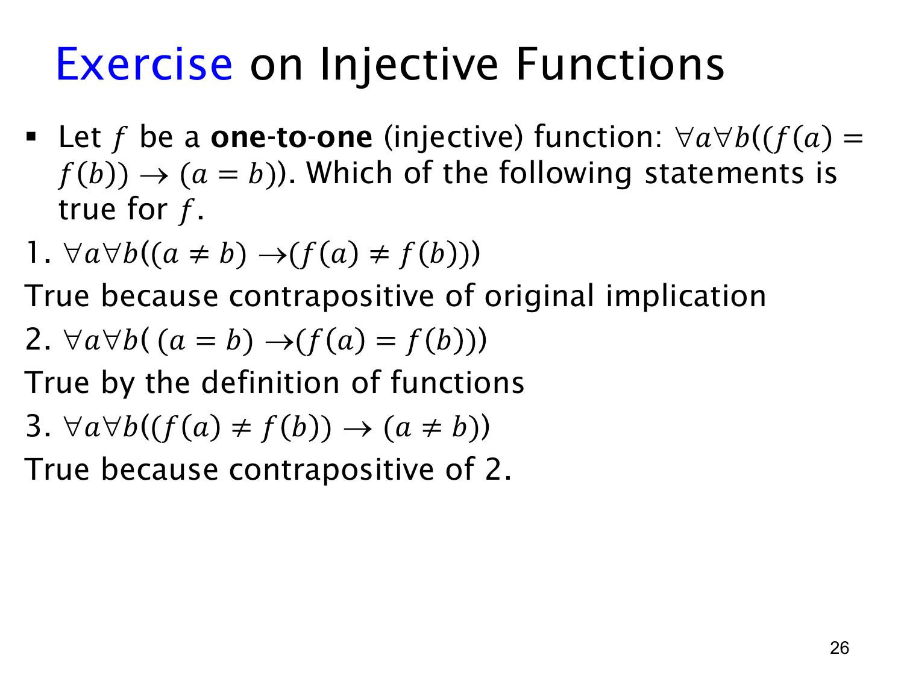

L1.4 · 第 26 页讲解原文
查看这一页课件

单射练习：三个都为真的蕴含式
已知 f 是单射，即对定义域中的所有 a,b，
f(a)=f(b) ⟹ a=b.
本页问三个陈述哪些成立，答案是：三个都成立，但理由并不相同。
- a=b⇒f(a)=f(b)。这正是单射定义的逆否命题。若不同输入得到相同输出，就违反单射，所以此式刻画单射本身。
- a=b⇒f(a)=f(b)。相同的输入代入同一个已定义函数，自然得到相同输出。这对任何函数都成立，无须额外假设单射。
- f(a)=f(b)⇒a=b。这是第 2 式的逆否命题，同样对任何函数都成立；若 a=b，输出就不能不同。
第 1 式与第 3 式看起来相似，但方向不同。第 1 式说“不同输入必须给出不同输出”，是单射的特殊要求；第 3 式说“不同输出必来自不同输入”，只是函数的基本性质。例如平方函数 f:Z→Z 不是单射，因为 1=−1 而 f(1)=f(−1)；但它仍满足第 2、3 式。
所有量词 ∀a∀b 都应理解为 a,b 从函数的定义域中取值，不能把定义域外的对象代入函数。